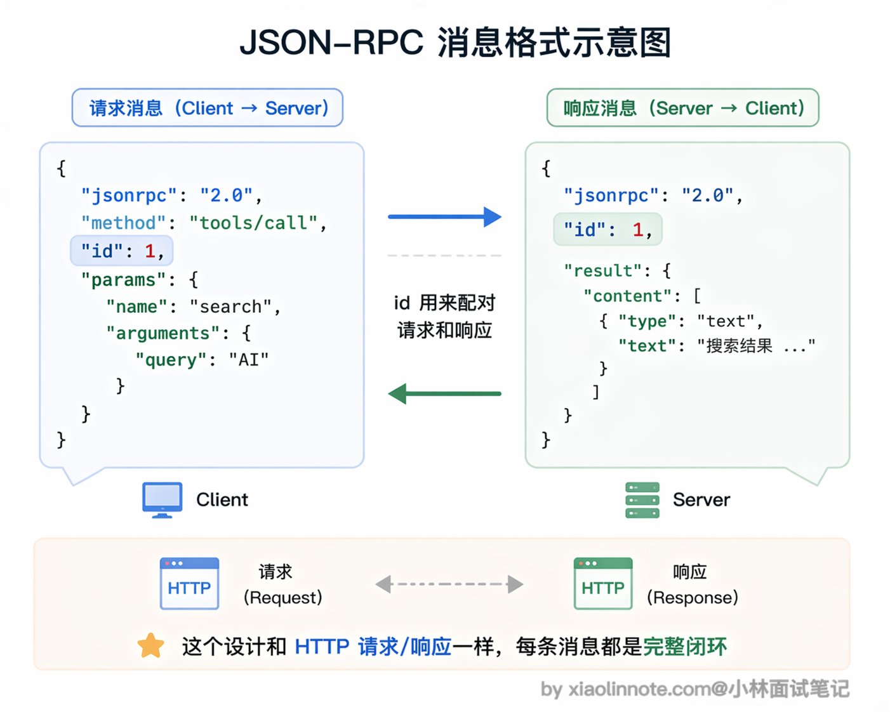
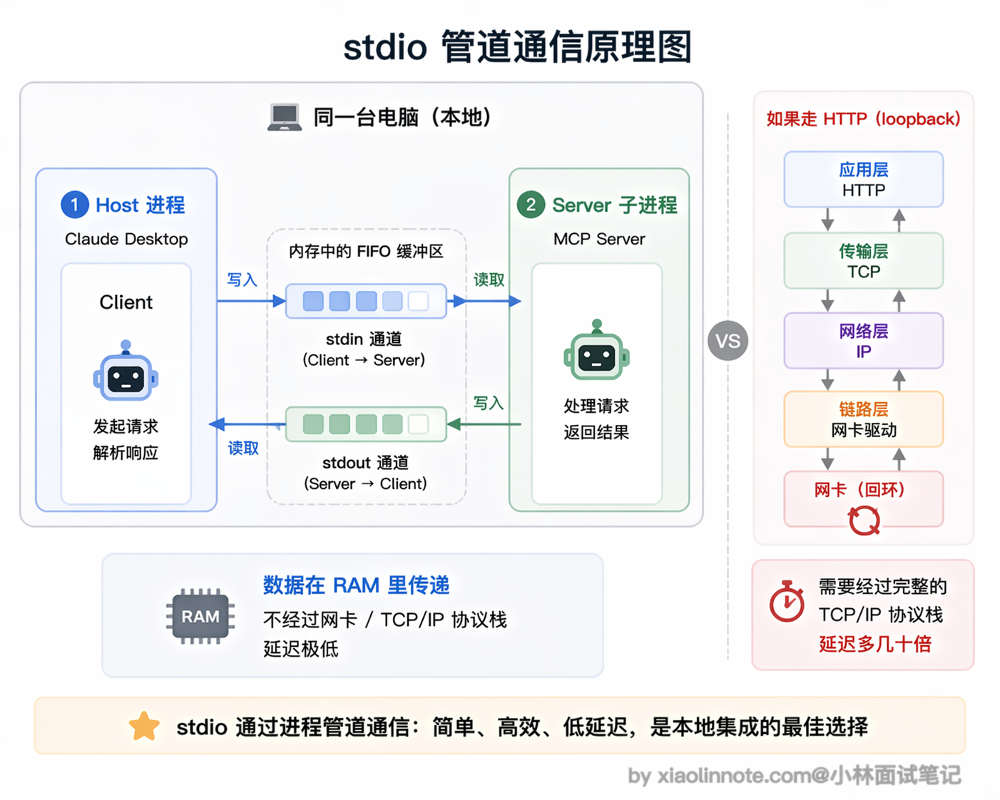
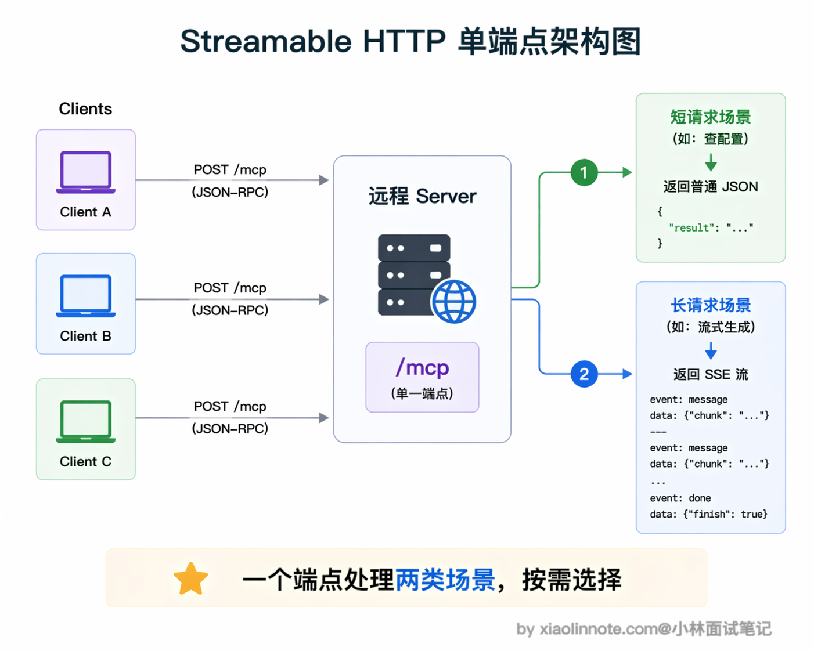
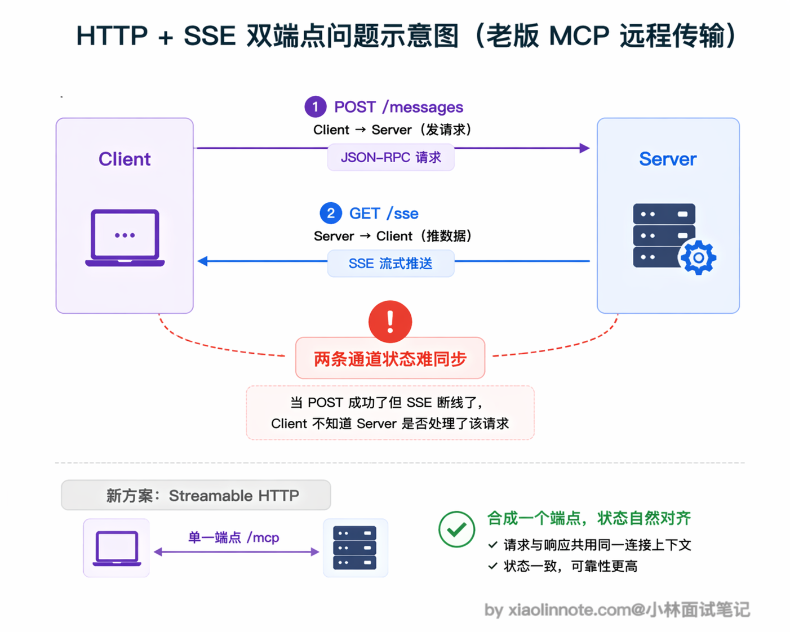
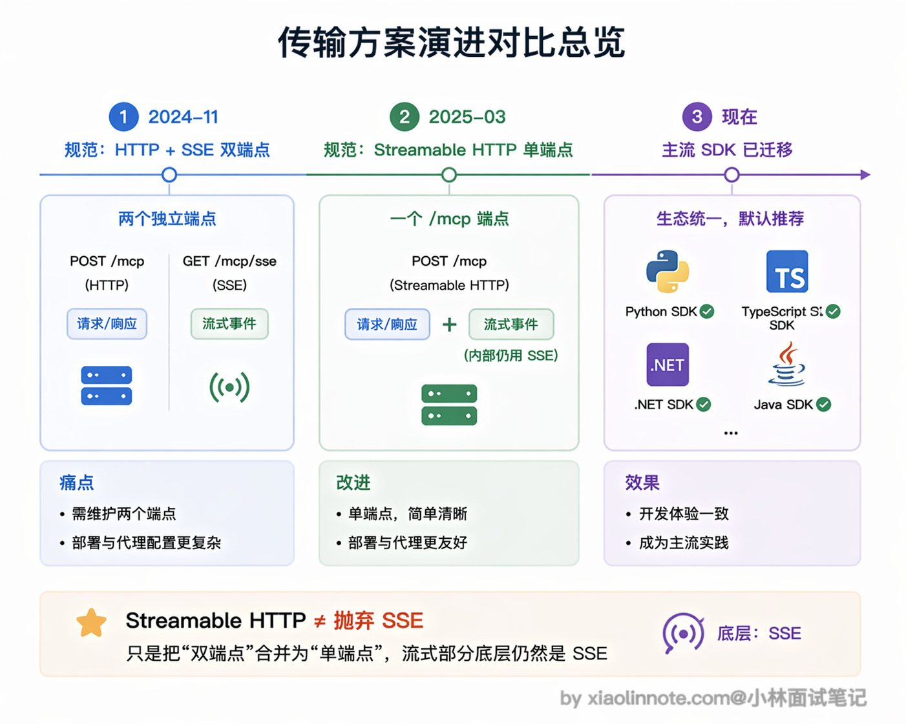

MCP 协议通常采用什么通信方式？
👔面试官：MCP 协议通常采用什么通信方式？
🙋♂️我：MCP 应该是用 WebSocket 吧？因为需要双向通信，Client 发请求、Server 推结果，WebSocket 全双工正好合适。
👔面试官：MCP 并没有用 WebSocket。你想想，MCP 有本地工具和远程工具两种场景，本地场景需要走网络吗？
🙋♂️我：本地的话……应该也是走 HTTP 吧，在本机起个服务，Client 通过 localhost 访问？
👔面试官：想复杂了。本地场景用的是 stdio，直接通过进程的标准输入输出通信，根本不需要网络。远程场景才用 HTTP，而且不是 WebSocket，是 SSE。另外不管哪种传输方式，底层消息格式统一用 JSON-RPC 2.0，这一点你也没提到。传输方式和消息格式是解耦的，这个设计是 MCP 灵活性的关键。
看来通信方式这块确实有不少容易搞混的地方，下面我把 MCP 的消息格式和两种传输方式都讲清楚。
💡 简要回答
MCP 支持两种主要的传输方式，分别适用于不同场景。
本地场景用 stdio，Client 把 Server 作为子进程启动，通过标准输入输出通信，延迟极低，不用开端口，也没有网络安全问题，我用 Claude Desktop 接本地工具走的就是这种方式。
远程场景现在推荐用 Streamable HTTP，Server 作为独立的 HTTP 服务部署，多个 Client 可以共享同一个 Server，适合团队统一管理工具服务。
MCP 早期版本（2024-11-05 规范）的远程传输是「HTTP + SSE」双端点方案，2025 年 3 月的规范更新里被标记为 deprecated（保留向后兼容但不推荐新项目使用），Streamable HTTP 成为了推荐的远程传输方式。
不管哪种传输方式，底层消息格式都统一用 JSON-RPC 2.0，传输方式只影响「怎么传」，消息协议本身不变。
📝 详细解析
MCP 的消息格式：JSON-RPC 2.0
在说传输方式之前，先说消息格式，因为不管用哪种传输方式，消息格式都是同一套。
那为什么 MCP 选了 JSON-RPC 2.0 呢？
其实原因很朴素：MCP 需要一种「Client 调用 Server 的方法，Server 返回结果」的通信模式，这本质上就是远程过程调用（RPC）。
而 JSON-RPC 2.0 是现成的、足够轻量的 RPC 规范，用 JSON 格式易读易调试，任何编程语言都能实现，不管 Server 是 Python 写的还是 TypeScript 写的，消息格式都一样，不需要额外的序列化工具。

每条消息就是一个 JSON 对象，格式固定：
// 请求消息（Client -> Server）
{
"jsonrpc": "2.0",
"id": 1, // 请求 ID，用于匹配响应
"method": "tools/call", // 调用的方法名
"params": {
"name": "take_screenshot", // 工具名
"arguments": {"url": "https://example.com"}
}
}
// 响应消息（Server -> Client）
{
"jsonrpc": "2.0",
"id": 1, // 对应请求的 ID
"result": {
"content": [{"type": "image", "data": "...base64..."}]
}
}
JSON-RPC 本身只定义消息格式，不关心底层怎么传输，MCP 在此基础上定义了两种传输层实现。
传输方式一：stdio（标准输入输出）
stdio 是 MCP 最常用的传输方式，适合本地工具的场景。
工作原理：MCP Client（比如 Claude Desktop）在启动时，把 MCP Server 当作一个子进程启动，然后通过进程的标准输入（stdin）发送请求、从标准输出（stdout）读取响应。两个进程在同一台机器上运行，通过操作系统的管道通信。
这里的「管道」到底是什么？
你可以把它理解成操作系统在内存里给这两个进程分配的一段先进先出的小缓冲区：Client 往里塞一行 JSON，Server 从缓冲区的另一头读出来处理；Server 处理完再往另一条管道里塞一行 JSON，Client 从那头读。
整个过程不经过网卡、不经过 TCP/IP 协议栈，数据在 RAM 里走了一趟就到了，所以延迟天然比网络请求低得多，也不需要序列化成网络可传输的字节流。

stdio 方式有几个很明显的优点。
- 首先延迟极低，进程间通信比走网络快得多，数据直接在操作系统管道里流转，几乎没有开销。
- 其次不需要开端口，也就没有网络安全问题，不用担心外部访问。另外 Server 的生命周期是自动管理的，随 Client 启动而启动、随 Client 关闭而关闭，不需要你手动去管进程。
在实际使用中，你只需要在配置文件里告诉 Client「用什么命令启动 Server」就行了，比如在 Claude Desktop 的 claude_desktop_config.json 里这样配置：
{
"mcpServers": {
"filesystem": {
"command": "npx", // 启动命令
"args": ["-y", "@modelcontextprotocol/server-filesystem", "/tmp"],
"env": {} // 环境变量（可选）
}
}
}
传输方式二：Streamable HTTP（当前标准的远程传输）
远程场景下，Server 作为独立的 HTTP 服务运行，Client 通过网络连接访问。MCP 当前推荐的远程传输方式是 Streamable HTTP。
Streamable HTTP 的核心设计是用单个 HTTP 端点（通常是 /mcp）同时处理请求和响应。Client 通过 POST 请求发送 JSON-RPC 消息，Server 可以选择两种方式返回：如果是简单的同步操作，直接返回一个普通的 JSON 响应就行；如果是需要流式输出的操作，Server 返回一个 SSE 流，持续推送数据。这种「按需选择」的设计非常灵活，不需要强制建立长连接。
Streamable HTTP 的优点很明确。Server 可以部署在云端，多个 Client 共享同一个 Server，这对团队来说特别实用，比如团队共用一个部署在服务器上的数据库 MCP Server，所有人连同一个服务就行，不需要各自在本地跑一份。而且支持跨机器访问，不局限于本地环境，适合需要统一管理工具服务的团队或平台。

当然，相比 stdio 多了网络开销，延迟会略高一些，而且你还需要处理认证、网络中断重连等在本地场景下完全不用操心的问题。
为什么 SSE 被弃用了
你可能看到一些早期的 MCP 教程还在讲 SSE（Server-Sent Events）传输方式，这里要说明一下：HTTP + SSE 双端点方案是 MCP 早期版本（2024-11-05 规范）采用的远程传输方案，在 2025 年 3 月的规范更新里被标记为 deprecated，仍然保留向后兼容，但新项目应该直接用 Streamable HTTP。
为什么要替换？原因是架构上有一个小尴尬：Client 向 Server 发请求要走 POST 端点，Server 向 Client 推数据要走另一条 SSE 长连接端点，同一个对话被拆成了两条通道。这带来的具体问题是状态管理复杂，比如 Client POST 了一条消息之后网络突然断了，那条消息到底被处理了没、SSE 流会不会推回结果，Client 没有一个简单的办法判断，出问题时排查链路很长。

Streamable HTTP 的做法是把这两条通道合并成一个端点：Client 照样 POST 发请求，Server 根据情况决定返回「一个普通 JSON」还是「一条 SSE 流」，不需要 Client 提前开另一条连接。
注意这里的关键：Streamable HTTP 并没有抛弃 SSE，流式推送的部分底层还是 SSE（Content-Type: text/event-stream），只是把端点从两个合成一个。架构更简洁、对负载均衡和 serverless 环境都更友好。目前主流的 MCP 客户端和 SDK 都已经迁移到了 Streamable HTTP。

🎯 面试总结
回到开头踩的雷，最常见的误区就是想当然地以为 MCP 用 WebSocket 或者 HTTP REST 接口。
面试回答这道题，首先要说清楚 MCP 支持两种传输方式：本地场景用 stdio（标准输入输出，Server 作为子进程运行，通过管道通信），远程场景用 Streamable HTTP（Server 作为 HTTP 服务部署，单个端点同时处理请求和响应）。stdio 不走网络、延迟极低、生命周期自动管理；Streamable HTTP 支持多 Client 共享一个 Server，适合团队统一部署。
第二个要点是消息格式和传输方式的解耦。不管用 stdio 还是 Streamable HTTP，底层消息格式都统一用 JSON-RPC 2.0，切换传输方式不影响上层调用逻辑。这个解耦设计是面试官比较看重的点，说明你理解了 MCP 的分层架构，而不是把「消息格式」和「传输方式」混为一谈。
最后可以加分提一句传输方案的演进历史：MCP 早期（2024-11-05 规范）的远程传输是「HTTP + SSE」双端点方案，因为两条通道状态管理复杂，2025 年 3 月的规范更新里被 Streamable HTTP 取代（单端点，内部流式仍然走 SSE）。能把 SSE 和 Streamable HTTP 的区别说清楚是这题的关键，历史背景是加分项。